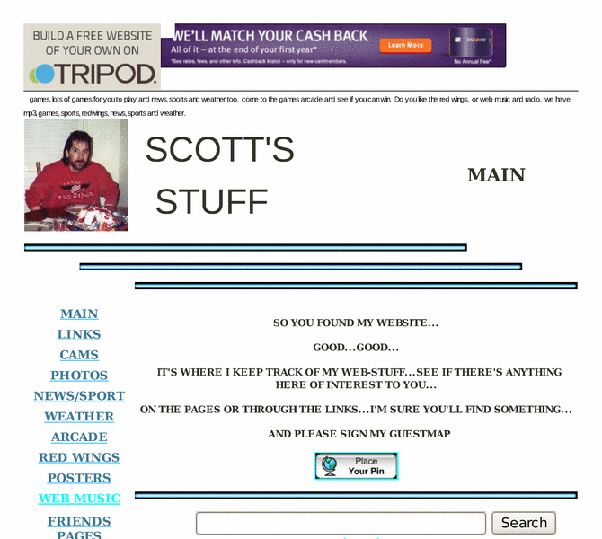

Previewing: Scotts Stuff Previewing: Scotts Stuff 
Use the left/right red arrow controls to navigate through this ring - Click the preview image to visit the member site.

A portal site....With sports,news,weather,games,cams and more....
Scotts Stuff owned by:
 suggy48706 suggy48706
A member of the original webring since 01/02/2003.
|
|